Attentional Control Theory
Stress and Performance
JXH-3042, JXC-3042
Lecturer in Psychophysiology and Cognitive Neuroscience
School of Psychology and Sport Science, Bangor University, UK
Web profile | Research publications | Software | Book a meeting
On a computer press F11 to de/activate full-screen view.
For smartphone and review: Bottom left menu > Tools > PDF Export Mode.
QR code to
these slides:
PIN
0000
Part 1 of 2
Agenda
- Brief review on attention and working memory
- Effects of anxiety
- Processing Efficiency Theory
- Quiet Eye phenomenon
- Mixture of theory, empirical research, and intuition
Brief review of working memory
We will review these features in turn.
Working memory has limited capacity (feature #1)
Think of working memory as the set of resources for temporarily holding and manipulating information.
Analogy used often: a working desk. There is enough space for the things you are working on right now, not much else…

Desk analogy
The white rectangle is the desk, representing how much working memory is being used at this moment. Currently: unlikely/impossible situation where nothing is taking space in working memory
Desk analogy
Most of the times (or always) something occupies space on the desk: the things that are in the working memory. Sometimes one has enough working memory capacity spare to do well whatever it is that one is doing.
Desk analogy
Other times, there’s too much in working memory and the system fails due to overload (running out of cognitive resources). Whatever one is doing is going to suffer in quality.
Measuring working memory capacity: span
Classic span tasks measure primarily (short-term) storage capacity: participants hear or see sequences of items (digits, letters, words) and must recall them in order. Span is the maximum number of items a person can correctly repeat, often reported to be around 7 +- 2.
These tasks involve mainly two relatively-simple processes: encoding and recall.
Optional: Link to demo of digit span task
Working memory’s multiple components (feature #2)
 Alan Baddeley
Alan Baddeley
Three different components handle storage of information (e.g., visuo-spatial, verbal-phonological) or manage access to that information.
House windows exercise
Helpful to realize how the three components work together.
Take a couple of minutes to work out how many windows are there in your house
You retreive from long-term memory and manipulate a mental image of your house as you “walk through” it room by room (visuospatial sketchpad)
As you progress, you keep a count of the number of windows by rehearsing the numbers out loud or not. (phonological loop)
You will have followed a strategy: deciding which rooms to visualize next, keeping track of progress, and ensuring the count is updated (central executive).
Combining the two features: Measuring component-specific capacity
Phonological/Verbal Working Memory:
- Digit Span: Recall sequences of digits in order
- Letter Span: Recall sequences of letters in order
- Word Span: Recall sequences of words in order
Visuospatial Working Memory:
- Corsi Block Tapping Test: Recall sequences of spatial locations. Optional: link to Corsi span test
- Visual Patterns Test: Recall patterns in a grid
Optional: Complex span tasks
Classic span tasks = measure how much you can hold.
Complex span tasks = measure how well you can hold information while doing something else.
They require to:
- resist interference from additioanl processing task
- keep the memory items active
Compared to classic span tasks, better association with higher-order cognition (executive functions)
Example: link to the operation span task
Attention
Working memory’s limited capacity (feature #1) implies that one can’t process all information at once. One needs to select… and that’s one of the things attention does
What other things does attention do other than selecting (orienting)? General alertness (being vigilant) and executive control (monitoring, regulating). More info
Orienting of attention: endo- vs exo-genous
Endogenous
- “endo” = from the inside
- voluntary, intentional
- determined by the person
- top-down
- goal-directed
Exogenous
- “exo” = from the outside
- involuntary, not intentional
- determined by the environment
- bottom-up
- stimulus-driven
“Cocktail party” scenario: demonstrating goal-directed (endogenous) and stimulus-driven (exogenous) attentional orienting

Designed to illustrate selective feature of attention at the preconscious level, but here merely a shortcut for me to illustrate goal-directed and stimulus-driven attention at play.
You are in a noisy place. You choose to attend to one speaker (goal-directed). Suddenly, your attention is captured (distracted) by a salient, personally relevant cue (like hearing your name from your back) (stimulus-driven).
Important: the extent of attentional control can be defined as the balance between goal-directed (concentration) and stimulus-driven (distraction) attention
Orienting of attention: overt vs covert
Overt
- observable orienting movement of sense organs/body
- attention shifts with sensor orientation (eyes, head/ears, posture)
- typically detectable by others
- examples:
- visual: turning eyes/head to look at a clock
- auditory: turning your head or cupping your ear toward a speaker
- tactile/proprioceptive: moving a finger to explore a texture
Covert
- internal shift of focus without observable movement
- attention shifts without changing sensor orientation
- typically not detectable by others
- examples:
- visual: keeping eyes fixed but monitoring something in peripheral vision
- auditory: keeping head still but following a conversation behind you
- tactile/proprioceptive: keeping the hand still but focusing on the pressure of a ring
Demonstrating overt vs covert
While fixating the cross at the centre, try to read what appears at the sides
COVERT + ORIENTING
You just experienced covert orienting
Types of attentional orienting: a 2 x 2 framework
Goal-directed orienting can happen overtly or covertly. Stimulus-driven orienting can also happen overtly or covertly.
Examples
| Overt | Covert | |
|---|---|---|
| Goal-directed | Deliberately turning your head to look and focus where your team-mate will pass | While dribbling look to your right but mentally tracking your team-mate running to your left |
| Stimulus-driven | In a tennis tournament, someone in the crowd shouts your name | A motorbike racer keeps their eyes locked on the track at a difficult turn but their attention is automatically pulled to a crash happening in their peripheral vision |
End of the brief review on working memory and attention
Reflect on the main things you did not remember about working memory or attention
What does anxiety do to attentional control?

Shapiro & Johnson (1987)
Study 1, key methodology
- N = 30 University students
- Task: Use one hand to classify central and peripheral target stimuli (perceptually difficult because the target stimuli were presented for a short duration)
- Participants needed to keep their eyes on a central fixation cross. A target stimulus could appear either centrally or in the periphery … or both: dual trial (i.e., two targets at the same time)
- Groups: arousal, non-arousal
- The other hand was for receiving electrical shocks every now and then, but only the lucky ones in the arousal group.
- Analyses: the researchers were interested in the participants’ choices in the dual trials.
Study 1, main results
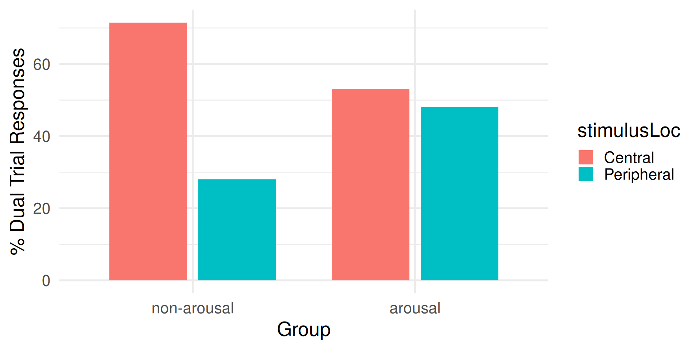
For the non-arousal group, dominance of central stimulus
For the arousal group, no dominance. Arousal countered the dominance of the central stimulus.
Shapiro & Johnson (1987)
Study 2, key idea
They realized the central stimulus was more predictable (only one location) than the peripheral stimulus. In study 2, they used the same Method, but made the central location less predictable than in study 1.
Study 2, main results
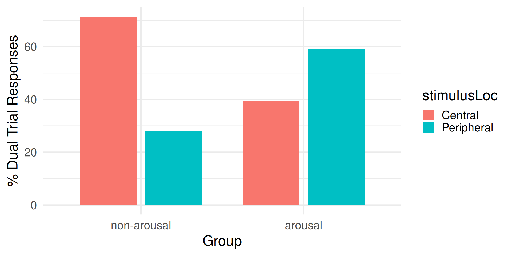
Arousal reversed the dominance, so that when a pair of central-peripheral targets were presented, the peripheral target became the dominant.
Shapiro, K. L., & Johnson, T. L. (1987). Effects of arousal on attention to central and peripheral visual stimuli. Acta Psychologica, 66(2), 157-172. https://doi.org/10.1016/0001-6918(87)90031-X. Accessible from Talis
Lipp & Derakshan (2005)
Key methodology:
- N = 70 participants
- Groups:
- Spider/snake phobics
- non-phobics
- Task: emotional dot probe
- Emotional Dot probe: a cue appears on the screen either left or right before a target stimulus appears either left or right. The cue could be neutral or emotional (image of a snake).
Main results:
- The target was detected faster when appearing shortly after an emotional cue
- Larger effects for phobics
Lipp, O. V., & Derakshan, N. (2005). Attentional bias to pictures of fear-relevant animals in a dot probe task. Emotion, 5(3), 365. https://doi.org/10.1037/1528-3542.5.3.365. Accessible from Talis
Lautenbach et al. (2016)
Key methodology:
- N = 40 athletes
- Task: emotional Stroop task
- A: negative sport related words (e.g., defeat, failure, rival)
- B: neutral sport related words (e.g., endurance, position, sideline)
- C: neutral non-sport related words (e.g., radio, lemon, computer)
Main results:
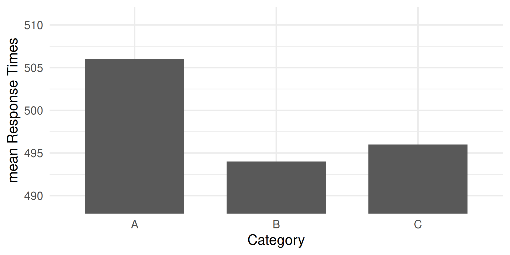
Significantly slower when responding to negative sport-related words.
Lautenbach, F., Laborde, S. J. P., Putman, P., Angelidis, A., & Raab, M. (2016). Attentional distraction by negative sports words in athletes under low-and high-pressure conditions: Evidence from the sport emotional Stroop task. Sport, Exercise, and Performance Psychology, 5(4), 296. https://doi.org/10.1037/spy0000073 Accessible from Talis
Summary of effects of anxiety on attention: Attentional Bias
Anxiety induces an attentional bias, consisting of enhanced processing of threats:
- early detection of threats
- impaired disengagement from threats
(whatever threat means to the individual).
Good or bad? Neither. From an evolutionary perspective, anxiety is an adaptive process that increase chances of survival. But thinking about threats might not always be the most functional way to use one’s working memory resources.
Processing Efficiency Theory (PET)
There are plenty of resources (white) to complete an easy task (yellow). Performance is good.
Processing Efficiency Theory (PET)
Resources dedicated to worry (blue) are not dedicated to process task-related information. But there are plenty resources for both. Performance is good.
Processing Efficiency Theory (PET)
If worry takes more resources (i.e., one experiences greater cognitive anxiety), while still leaving enough for the easy task, there is still space for both. Performance is still not impaired.
Processing Efficiency Theory (PET)
But if the task is more difficult requiring more resources, and if there are none left, performance will be impaired.
Performance is impared if there are not enough resources to carry out the task. Worry is a distraction that takes resources away from the task
Processing Efficiency Theory (PET)
However, working memory capacity can temporary increase, through effort mobilization. There are now enough resources for both the worry and the task. Performance is good. However, the fact that extra resources were mobilized means decreased efficiency.
Processing Efficiency Theory (PET)
In fact, even a task so difficult could have been carried out well in a more efficient manner (i.e., without the extra effort) if worry did not occupy so much of working memory.
Processing Efficiency Theory (PET)
The effects of worry (cognitive anxiety) are best studied not on performance, but on processing efficiency.
Note
Optional: my interpretation \[ \text{efficiency} \propto \frac{\text{performance}}{\text{resources}} \]
The formula is a short version of “how much you do in relation with how much effort you put tells about efficiency”. The symbol \(\propto\) means “is proportional to”.
Eysenck, M. W., & Calvo, M. G. (1992). Anxiety and performance: The processing efficiency theory. Cognition & emotion, 6(6), 409-434. https://doi.org/10.1080/02699939208409696. Accessible from Talis.
Smith et al. (2001)
Key methodology:
- N = 12 volleyball players
- 6 low and 6 high in trait anxiety
- Task: Eigth volleyball games
- Measures:
- State anxiety (through questionnaire)
- Effort mobilized (through questionnaire)
- Performance (through video analyses)
- Analysis factors
- Group (low, high trait anxiety)
- set criticality
- low: 7 or more points of difference
- moderate: between 3 and 6 points of difference
- high: less than 2 points of difference
Predictions:
- State anxiety would be greater for more critical sets
- Effort would also be greater for more critical sets
- Performance would increase when more effort is mobilized
- but only for the low-trait anxiety group
Main results:
- High-trait anxiety groups experienced greater state anxiety
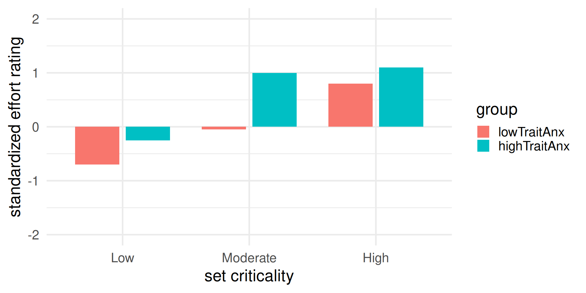
- Effort increased with set criticality
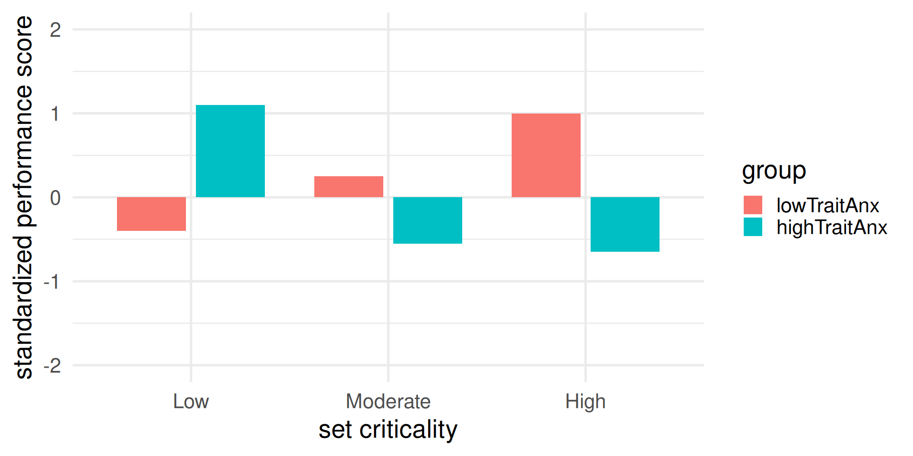
- Performance improved with set criticality for the low-trait anxiety group
- Performance declined with set criticality for the high-trait anxiety group
Interpretation: Performance and worry competed for resources. As worry (state anxiety) increased over set criticality, fewer and fewer resources were left to focus on the volleyball task. Some support for Processing Efficiency Theory
Smith, N. C., Bellamy, M., Collins, D. J., & Newell, D. (2001). A test of processing efficiency theory in a team sport context. Journal of Sports Sciences, 19(5), 321-332. https://doi.org/10.1080/02640410152006090. Accessible from Talis
Visuospatial attention in target sports: the quiet eye
 Joan Vickers
Joan Vickers
“Quiet Eye” as much a phenomenon as a variable.
As a variable
- The QE is a duration of time, units of (milli)seconds
- Eyes on the critical location or object (e.g., ball in golf putting)
- It starts before movement initiation (“QE onset”)
- It ends when the gaze deviates from the location or object of a certain amount (“QE offset”)
As a phenomenon
Extensive reports in literature that:
- experts have a longer QE than novices
- QE is longer for successful than unsuccessful performance
- it is trainable
Mechanisms / What happens during the QE that is beneficial to performance?
- Visual processing
- Postural-kinematic quiescence
- a few others…
Optional reading:
Vickers, J. N. (1992). Gaze Control in Putting. Perception, 21(1), 117-132. https://doi.org/10.1068/p210117 Accessible from Talis
Hossner (Ed.), E.-J. (2016). Quiet Eye research – Joan Vickers on target. Current Issues in Sport Science (CISS), 1, 100. https://doi.org/10.15203/CISS_2016.100
Gallicchio, G., Cooke, A., & Ring, C. (2018). Assessing ocular activity during performance of motor skills using electrooculography. Psychophysiology, 55(7), https://doi.org/10.1111/psyp.13070
Gallicchio, G., & Ring, C. (2020). The quiet eye effect: A test of the visual and postural-kinematic hypotheses. Sport, Exercise, and Performance Psychology, 9(1), 143. http://dx.doi.org/10.1037/spy0000162 Accessible from Talis
Wilson & Pearcy (2009)
Key methodology:
- N = 6 participants
- Task: Golf putting on flat and sloped surfaces
- Measure:
- Performance
- Quiet Eye duration via eye tracking
Key result:
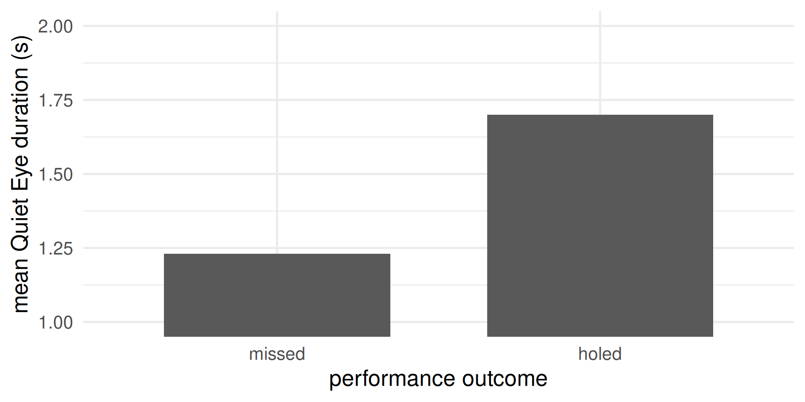
Significantly longer QE durations ahead of holed than missed putts.
Wilson, M. R., & Pearcy, R. C. (2009). Visuomotor Control of Straight and Breaking Golf Putts. Perceptual and Motor Skills, 109(2), 555-562. https://doi.org/10.2466/pms.109.2.555-562 Accessible from Talis
Walters-Symons, Wilson, & Vine (2017)
Key methodology
- N = 18 experienced golfers
- N = 21 novice golfers
- Task: flat-surface golf putting
Key result
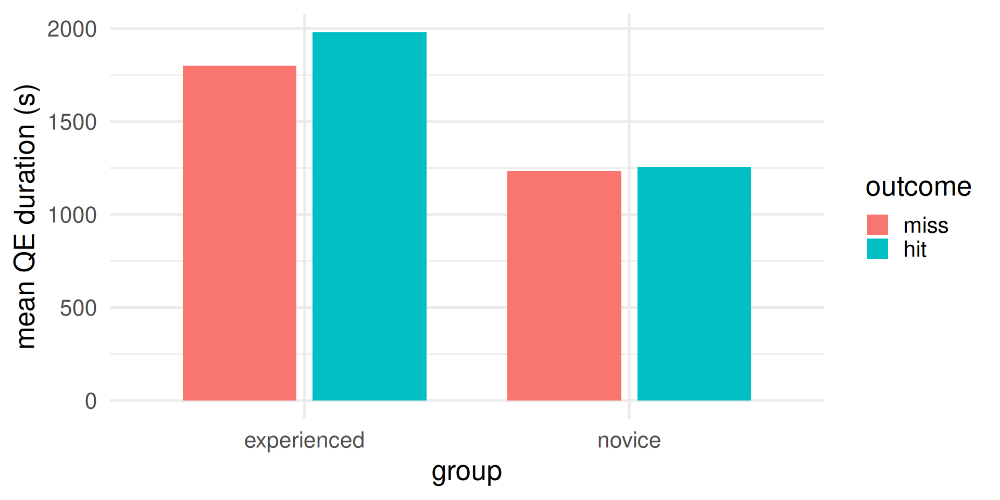
- Experienced golfers showed longer QE durations than novices
Walters-Symons, R. M., Wilson, M. R., & Vine, S. J. (2017). The quiet eye supports error recovery in golf putting. Psychology of Sport and Exercise, 31, 21-27. https://doi.org/10.1016/j.psychsport.2017.03.012 Accessible from Talis
Wilson et al. (2006)
Key methodology:
- N = 24 university students
- Median split into low and high trait anxiety
- Task: simulated rally driving, under two conditions
- practice (designed to induce lower state anxiety)
- competition (designed to induce higher state anxiety)
- Measures:
- Trait and state anxiety (through questionnaires)
- Effort mobilized (through questionnaire)
- Performance (time to complete the race)
- Effort
- through questionnaire
- pupil diameter (larger pupil = more effort)
Main results:
for both groups, state anxiety increased from practice to competition.
the high-trait anxiety group showed greater state anxiety.
Pupil diameter increased from practice to competition for both groups, being also larger for high-trait anxiety group
Self-report effort showed similar results, with the practice-to-competition increase much larger in the high-trait anxiety group.
No group difference in performance during practice
Performance decreased from practice to competition
Performance drop was larger for the high-trait anxiety group
Interpretation:
There were enough spare resources in working memory to complete the driving task when worry (state anxiety) used a small amount of resources.
Worry (state anxiety) occupied more resources in competition, especially for the high-trait anxiety group.
The high-trait anxiety group mobilized more resources, increasing their working memory, but the extra resources were not enough to maintain as good performance.
These findings support Processing Efficiency Theory
Wilson, M., Smith, N. C., Chattington, M., Ford, M., & Marple-Horvat, D. E. (2006). The role of effort in moderating the anxiety–performance relationship: Testing the prediction of processing efficiency theory in simulated rally driving. Journal of sports sciences, 24(11), 1223-1233.https://doi.org/10.1080/02640410500497667. Accessible from Talis
Part 2 of 2
Agenda
- Brief recap of Procesing Efficiency Theory
- Brief review of executive functions and revisiting Alan Baddeley’s model of working memory
- Attentional Control Theory
- Gaze training
- Cognitive training
- Mixture of theory, empirical research, and intuition
Very brief recap of Processing Efficiency Theory
People who experience greater cognitive anxiety (worry) perform worse than those who experience less. But this is not always the case… why?
- There is not enough space in the working memory to process everything
- Our attention selects information to be processed
- Working memory and attention are not unitary concepts
- Cognitive anxiety (worry) does not necessarily reduce performance
- Effort can counteract the impairment at the expense of processing efficiency
- Cognitive anxiety (worry) reduces processing efficiency
Executive functions
Alan Baddeley’s initial model of Working Memory was later expanded to include at-the-time improved understanding of executive functions.
Inhibition = Ability to resist to the processing task irrelevant information (i.e., resisting distractions)
Shifting = Ability to move focus towards the task relevant information (i.e., concentrating)
Updating = Ability to monitor and process information in working memory
Greater specificity on the central executive component of working memory and additional empirical evidence led to the development of Processing Efficiency Theory into Attentional Control Theory
Attentional Control Theory
Attentional Control Theory is defined by six hypotheses / predictions
Michael Eysenck
Eysenck, M. W., Derakshan, N., Santos, R., & Calvo, M. G. (2007). Anxiety and cognitive performance: attentional control theory. Emotion, 7(2), 336. https://doi.org/10.1037/1528-3542.7.2.336 Accessible from Talis
ACT hypothesis 1: processing efficiency
Cognitive anxiety impairs processing efficiency more than it impairs performance.
Worry (in blue) occupies resources in Working Memory. But there are enough resources to complete the task (in yellow).
ACT hypothesis 1: processing efficiency
Cognitive anxiety impairs processing efficiency more than it impairs performance.
Worry (in blue) takes resources away from the task (in yellow). Performance is impaired.
ACT hypothesis 1: processing efficiency
Cognitive anxiety impairs processing efficiency more than it impairs performance.
Overall resources (in white) are temporarily increased through greater effort. Performance of the task (yellow) is not impaired despite the large worry (blue). Efficiency decreases.
ACT hypothesis 2: task demands
The more difficult the task, the higher the chances of decreased efficiency
If the task is easy (i.e., it requires not many Working Memory resources), the effects of worry on efficiency are not visible (no need to put extra effort).
ACT hypothesis 2: task demands
The more difficult the task, the higher the chances of decreased efficiency
It is when the task is hard (i.e., it requires many Working Memory resources), that the effects of worry on efficiency are more likely to be visible (there is need to put extra effort).
ACT hypothesis 3: attentional control
Cognitive anxiety disrupts attentional control
A scale analogy:
⚖️
goal-directed (i.e., concentration) and stimulus-driven (i.e., distraction) types of orienting compete for which one is the main driver of attention/selection (i.e., what to focus on)
Attentional control = ability to maintain a goal-directed (endogenous) attentional orienting (concentration), while suppressing stimulus-driven (exogenous) attentional orienting (distraction)
The issue when performing under pressure:
GOAL-DIRECTED STIMULUS-DRIVEN
You lose focus on the task and become distracted by non-task related information.
The objective of performing under pressure intervention:
GOAL-DIRECTED
STIMULUS-DRIVEN
You shield from distractions and maintain focus on task-related information.
ACT hypothesis 4: inhibition
How is attentional control disrupted (hypothesis 3) under elevated cognitive anxiety? Through impaired inhibition
- Impaired inhibition enhances the stimulus-driven path to attentional orienting
- One becomes unable to block out irrelevant information
- Potential distractions (non-task related activity) intrude in one’s attention
ACT hypothesis 5: shifting
How is attentional control disrupted (hypothesis 3) under elevated cognitive anxiety? Through impaired shifting
- Impaired shifting decreases the goal-directed path to attentional orienting
- One becomes unable to focus on the relevant information
- Potential important information (task related activity) are not in one’s focus
ACT hypothesis 6: updating
How is attentional control disrupted (hypothesis 3) under elevated cognitive anxiety? Through impaired shifting
- When the Working Memory is overloaded, it loses the ability to update and monitor information
- One fails to keep track of changing task demands
- Processing becomes less flexible and adaptive
Wilson et al. (2009)
Key idea:
- Quiet Eye duration as measure of attentional control
- Does anxiety impair QE durations?
Key methodology:
- N = 10 university students (basketball players)
- Task: free throws until 10 hits and 10 misses
- Conditions:
- Control (low pressure)
- Experimental (high pressure, competition and financial incentive)
- Measures:
- State anxiety, through questionnaire
- Quiet Eye duration, through eye tracking
Key results:
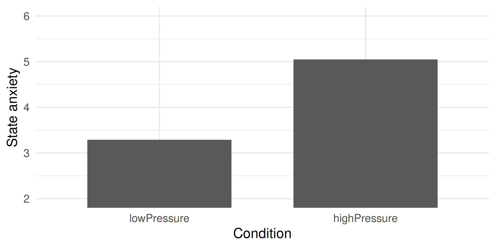
State anxiety was larger in the experimental condition.
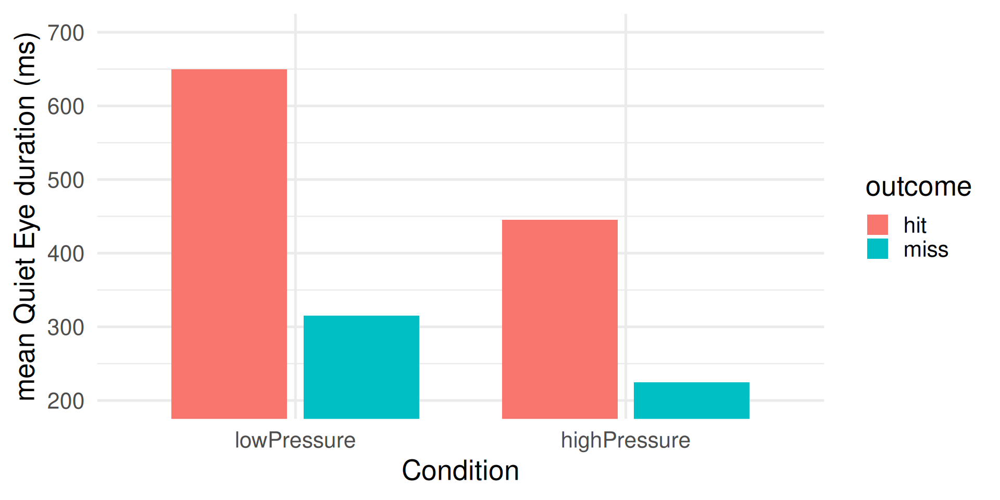
Effect of outcome: Shorter Quiet Eye duration for missed throws.
Effect of pressure: Shorter Quiet Eye duration under greater pressure.
Some evidence that attentional control is impaired under elevated state anxiety
Wilson, M. R., Vine, S. J., & Wood, G. (2009). The influence of anxiety on visual attentional control in basketball free throw shooting. Journal of Sport and Exercise Psychology, 31(2), 152-168. https://doi.org/10.1123/jsep.31.2.152 Accessible from Talis
Interventions
Attentional control can be improved through Gaze Training and Cognitive Training.
These interventions are not specific but compatible with Attentional Control Theory.
We will review what they are, what ACT-specific mechanisms they address (supposedly), and some empirical evidence supporting them.
Specificity of mechanisms
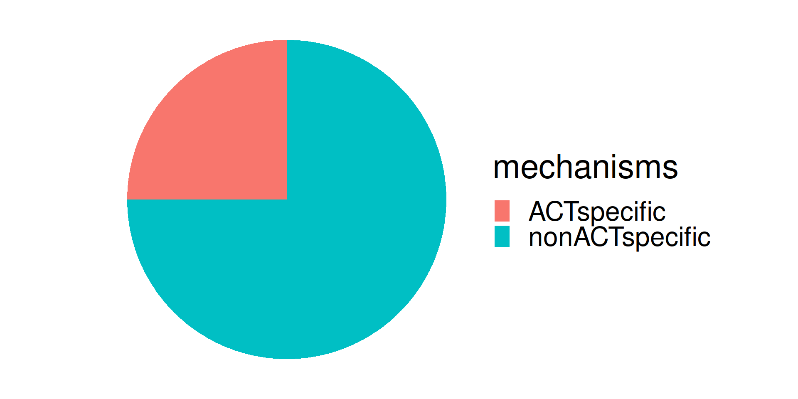
Several mechanisms have been proposed to explain why gaze trainign and cognitive training enhance performance under stress. Only some of those mechanisms are compatible with Attentional Control Theory. We will review only those.
Interventions: Gaze training
What is it: Training to exhibit a longer quiet eye duration, specifically under greater cognitive anxiety (worry).
ACT-specific mechanisms that it fixes:
- Quiet Eye duration as index of dominance of goal-directed orienting (more concentration) over stimulus-driven orienting (more distraction)
- Training for a longer Quiet Eye duration allows greater goal-directed and less stimulus-driven orienting
Caveats to consider for the success of training:
- Most experts already have long Quiet Eye durations, at least in low-pressure situations
- Not for all sports it is easy to identify where the visual focus should be and for how long
Interventions: Cognitive training
What is it: Training to increase your working memory capacity (i.e., the desk from the analogy).
ACT-specific mechanisms that it fixes:
- Anxiety (worry) occupies resources from working memory, conflicting with resources that should be dedicated to task-related processing
- A permanently larger working memory capacity would increase the chances that, despite worry taking resources, there would be enough left for processing task-related information.
Caveats to consider for the success of training:
- Tranferrability to real-world tasks
Vine & Wilson (2010)
First Quiet Eye training study
Key methodology:
- N = 14 university students, minimal golf experience
- control goup: technical training
- experimental group: technical and Quiet Eye training
- Design: longitudinal (i.e., over time)
- Task: straight putts
Procedure:
Training protocol instructions
Technical instructions:
- Stand with legs hip width apart and keep your head still.
- Maintain relaxation of shoulders and arms.
- Keep the putter head square to the ball.
- Perform a pendulum-like swing and accelerate through the ball.
- Maintain a still head after contact.
Quiet Eye training instructions
- Assume stance and ensure that gaze is on the back of the ball.
- Fixate the hole. (Fixation should be made no more than three times.)
- Your final fixation should be on the back of the ball and for not longer than 2-3 seconds.
- No gaze should be directed to the club head or shaft during the putting action.
- Your fixation should remain steady for 200-300 ns after contact with the ball.
Key results:
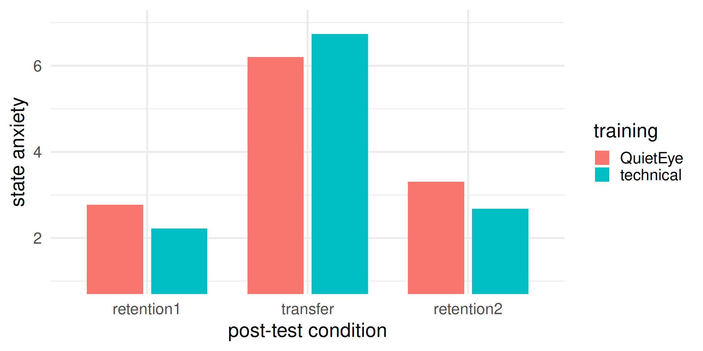
The training did not have an effect on state anxiety. The training did not distinguish people’s anxiety reaction to competitive pressure.
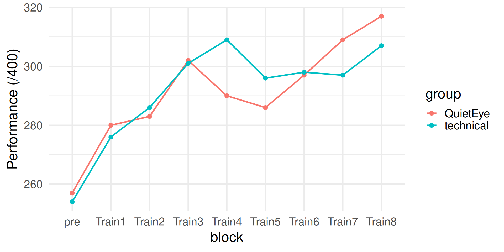
No performance differences at pre-test (before training).
Performance overall improving for both groups.
No obvious performance advantage on one group over the other.
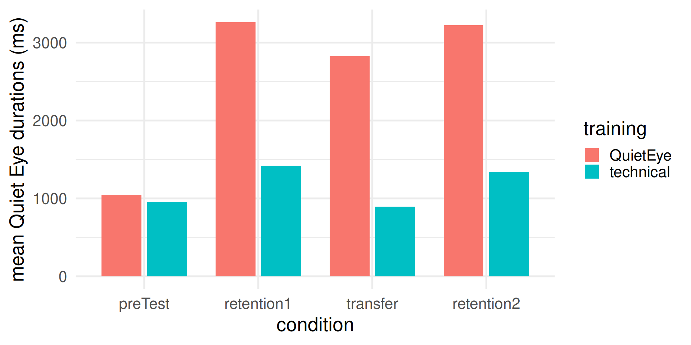
Quiet Eye durations were as expected:
- equal between groups at pre-test
- longer for the QE group, at the post-tests
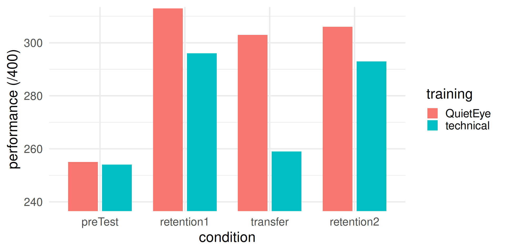
Performance was comparable across groups at all retention post-tests, except at transfer (high pressure performance), where the technical but not the Quiet Eye group showed a significant drop in performance
Vine, S. J., & Wilson, M. R. (2010). Quiet eye training: Effects on learning and performance under pressure. Journal of Applied Sport Psychology, 22(4), 361-376. http://dx.doi.org/10.1080/10413200.2010.495106 Accessible from Talis
Optional reading (review of Quiet Eye training literature):
Vine, S. J., Moore, L. J., & Wilson, M. R. (2014). Quiet eye training: The acquisition, refinement and resilient performance of targeting skills. European journal of sport science, 14(sup1), S235-S242. http://dx.doi.org/10.1080/17461391.2012.683815 Accessible from Talis
Sari et al. (2016)
Key methodology:
- N = 26 university students, pre-screened through questionnaires for high trait anxiety and low attentional control
- experimental group: adaptive cognitive trainining (adaptive dual n-back)
- control group: low-load cognitive training (non-adaptive dual 1-back)
- Design: longitudinal (i.e., over time)
Procedure:
- Some pre and post-test measures:
- attentional control through rest state electroencephalography (EEG)
- Flanker task performance (Link to Flanker task), under anxiety-inducing conditions (loud and unpredictable noise bursts)
Training explanations:
- visual n-back: one 3x3 grid is presented at the time with only once cell illuminated. Participants need to respon when the same grid was presented n trials before.
- phonological n-back: one letter is pronounced at the time. Participants need to respon when the same letter was presented n trials before. (Link to classic visual letter n-back)
- dual n-back: visual and phonological stimuli are presented simultaneously. Trials can match visually (press a key), phonologically (press another key), or both (press both keys)
- adaptive dual n-back: the number n increased or decreased at the next block depending on accuracy at the previous block. Consult the paper for a figure of the stimuli
- Schedule: 15 sessions in 21 days
Some key results
- the adaptive group reached high levels of complexity (large n in b-back)
- The adaptive group showed better Flanker task performance under conditions of elevated state anxiety
- The adaptive group showed larger values of EEG indices associated with better attentional control
- Cognitive training improved attentional control under pressure / resilience of attentional control to pressure
Sari, B. A., Koster, E. H., Pourtois, G., & Derakshan, N. (2016). Training working memory to improve attentional control in anxiety: A proof-of-principle study using behavioral and electrophysiological measures. Biological psychology, 121, 203-212. http://dx.doi.org/10.1016/j.biopsycho.2015.09.008 Accessible from Talis
Ducrocq et al. (2017)
Key methodology:
- Similar to that of Sari et al. (2016) but in a sport task (tennis)
- N = 30 participants from tennis club
- experimental group: adaptive dual n-back
- control group: non-adaptive dual 1-back
- Some pre- and post-test measures:
- performance at change detection task
- tennis volley task performance and Quiet Eye duration, under lower and higher pressure
Some key results
- The experimental group reached performed better than the control group at the change detection task
- The experimetal group performed better at the higher pressure, whereas no changes in the control group
- The experiemntal group showed later Quiet Eye period offset than the control group
Ducrocq, E., Wilson, M., Smith, T. J., & Derakshan, N. (2017). Adaptive working memory training reduces the negative impact of anxiety on competitive motor performance. Journal of Sport and Exercise Psychology, 39(6), 412-422. https://doi.org/10.1123/jsep.2017-0217 Accessible from Talis
Optional: Some thoughts
Which model of performing under pressure is right?
Attentional control
Reinvestment
Challenge and threat appraisal
Psychomotor efficiency
Constrained action
Ironic processing
Etc.
No doubts these models will be refined again and again, and that’s the researcher’s job. For applied contexts, however, I encourage you to focus on the utility of a model (in explaining a phenomenon or achieving practical impact).

Optional material from Rob Gray’s perception and action podcast
Performing and choking under pressure
Interview with Sam Vine, Quiet Eye, Pressure, VR training
Choking under pressure revisited: critiques
Choking under pressure revisited: integrative theories
Sports Science Shorts: Choking under pressure Q&A
Interview with Denise Hill, choking under pressure